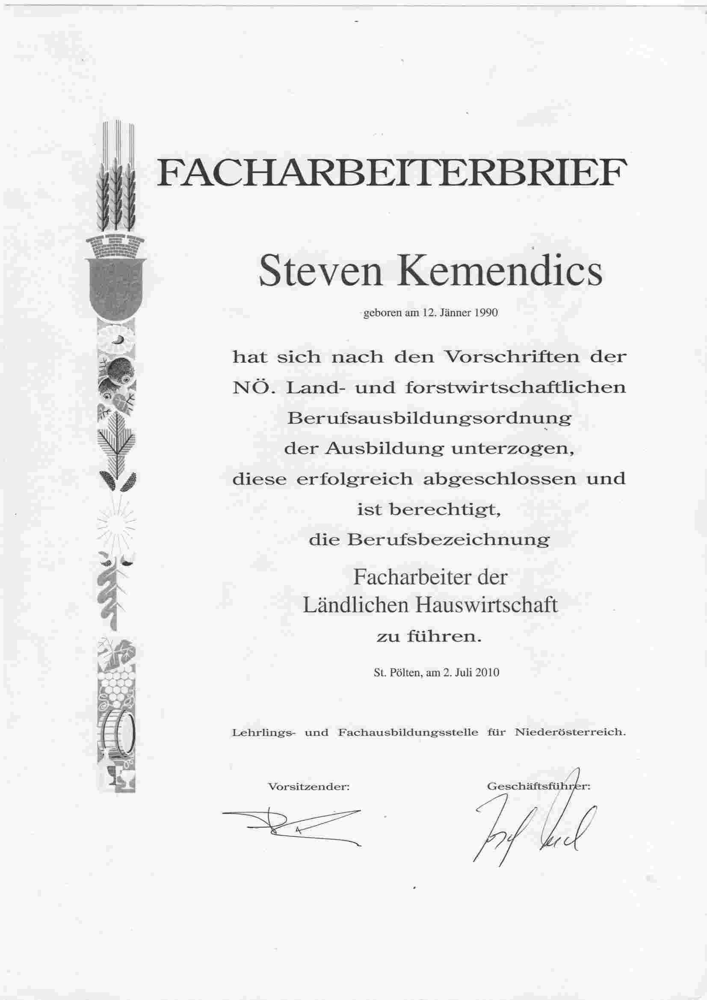

Steven KEMENDICS
Software Developer
Software Developer
E-mail: stevenkemendics@gmail.com
Phone: +43 660 8739016
School was always associated with certain challenges for me. At birth, I suffered a kind of stroke, which damaged the part of my brain responsible for language. Although a newborn’s brain has an impressive ability to adapt and compensate, learning spelling, grammar, and new languages has always been a special challenge for me.
Despite the low expectations many had for me, I refused to be discouraged. In secondary school, I was the only student in the lowest performance group in the subject German, whose native language was German—yet I gave my best every step of the way. Eventually, I decided to attend the Agricultural Technical School (LFS) Obersiebenbrunn in the field of Home Economics, as there was no second foreign language required and the offered subjects matched my interests. I successfully completed my studies with a secondary school diploma in Home Economics and an additional qualification as a kindergarten assistant. After a year of practical experience, I also earned my professional certificate in Rural Home Economics and completed an apprenticeship as a Business Services Clerk.
I was raised in a religious household. Although I initially distanced myself from my faith during my youth, I eventually found my own path back to it and decided to serve a mission for the Church of Jesus Christ of Latter-day Saints. From 2010 to 2012, I served in the United States, specifically in the states of Utah and Wyoming. This experience enriched me not only spiritually but also provided valuable practical skills: managing a limited budget, organizing tasks, communicating with people from diverse backgrounds, and taking responsibility for specific areas of work.
After returning home, I resumed working at McDonald’s while continuing to seek a more fulfilling career path. Within my faith community, I took on various voluntary leadership roles, including serving as the secretary to the bishop and his counselors. These responsibilities taught me organizational skills, leadership, and how to motivate others. Later, I led the teacher’s group, ensuring the quality of instruction and stepping in for absent teachers when needed. I also took on the responsibility of overseeing the young men (ages 12–18) in our congregation, guiding their personal development and organizing activities.
Currently, I serve as the chairperson of a welfare and self-reliance advisory committee, where I help members of my faith community tackle personal challenges and develop skills for self-sufficiency. This role has further strengthened my interpersonal skills, as well as my abilities in organization and mentoring.
Alongside my work, I’ve continuously sought to develop my skills. While working at Heinrich Reiter GmbH, I completed a training course to become a certified trainer after realizing how much I enjoyed teaching others during a forklift certification course. Unfortunately, due to job market challenges, I couldn’t secure a position in this field. Nevertheless, my passion for teaching remains strong.
Knowing I didn’t want to work in a warehouse until retirement, I sought new opportunities and discovered BYU Pathway’s online study program. In April 2024, I began a degree in Software Development. By mid-June, I will complete my first year and reach the level of a Junior Developer. The following year will focus on web development, culminating in an Associate’s Degree and positioning me at the level of a Senior Web Developer. In my final year, I will specialize in software development, ultimately earning my Bachelor’s degree.
Outside of my professional and religious commitments, I am an avid sports fan. In my youth, I played soccer at a club level before switching to American football at the age of 15. To this day, I follow my favorite team as closely as possible and stay up-to-date with the latest developments.
Another passion of mine is video games—especially story-driven games. Titles like Dragon Age, Elder Scrolls Online, the Ezio storyline from Assassin’s Creed, and the Telltale’s The Walking Dead series have captivated me the most. I also enjoy sports games, and as a child of the 90s and early 2000s, Super Mario and Pokémon hold a special place in my gaming heart.
I am also a fan of the fantasy genre, whether it’s reading books or watching movies. I proudly consider myself both a Harry Potter enthusiast and a dedicated fan of The Lord of the Rings universe.
One of my greatest personal joys is building things. I take pride in being a handyman, fixing things around the house myself, and even building furniture instead of buying it. Learning new skills and expanding my knowledge constantly brings me satisfaction—often, I find that learning something new in one area helps me gain insights into completely different subjects. If I could have a superpower, it would be to possess all human knowledge and instantly understand every new scientific discovery as it happens. For me, knowledge is power.
Through my diverse experiences—whether in school, at work, within my faith, or in my personal life—I have developed qualities such as hard work, determination, team-building skills, curiosity, and tolerance. These characteristics continue to shape who I am today and will guide me on my future path.